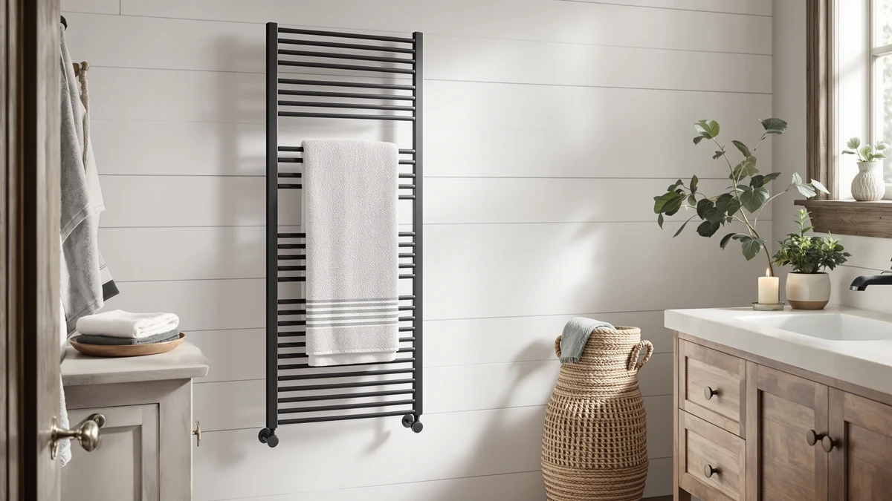

Best Wall Mounted Towel Warmers for Bathroom (2026)
Prices and picks verified as of September 2026. Independent, reader-supported reviews.


Quick Answer
After comparing seven of the best wall mounted towel warmers for bathroom use on bar count, material, and price, the Pursonic TW300 Towel Warmer Rack is the best overall pick for most bathrooms. It uses the same rust-resistant stainless steel as every other pick here at the lowest price in this lineup, and it fits a standard wall mount without the extra bars or convertible hardware you would pay more for elsewhere. If you need more capacity, a built-in shelf, or a freestanding option instead, we cover a pick for each below.
Our pick: Pursonic TW300 Towel Warmer Rack — $64.25 Check Price on Amazon
Bottom line: our top pick is the Pursonic TW300 Towel Warmer Rack for Bathroom at $64.25. The best budget option is the ELEGANTLIFE Electric Towel Warmer for Bathroom at $89.99.
Things to Know Before You Buy
- Bar count decides real capacity. Among the best wall mounted towel warmers for bathroom use in this guide, bar count ranges from 4 bars on the SHARNDY to 10 bars on the BLARALA, and that number determines how many towels can hang and heat at once.
- Stainless steel beats chrome. Every rack in this comparison uses stainless steel rather than chrome plating, which resists the rust and flaking that chrome develops after months of daily steam exposure.
- Not every rack is a permanent install. The Poloma model converts between wall-mounted and freestanding use, which matters if you're renting or aren't ready to drill into a wall.
- Price tracks capacity more than brand. Prices in this lineup run from $64.25 to $299.99, and the higher end generally buys more bars or a larger footprint rather than a fundamentally different feature set.
- Sizing isn't always listed. Two picks here, the Pursonic and ELEGANTLIFE, don't specify exact bar count or dimensions, so they suit a single towel better than a shared bathroom.
The best wall mounted towel warmers for bathroom spaces solve a problem no bath mat or radiator can: a towel that's actually warm and dry when you step out of the shower. We compared seven wall-mounted models built around one shared material choice, stainless steel, and looked at how bar count, footprint, and price separate a $64 starter rack from a $300 ten-bar unit. Our top pick, the Pursonic TW300 Towel Warmer Rack at $64.25, delivers the core wall-mounted format without the premium price some of the bulkier racks charge.
Bar count is the first thing to check before you buy a wall mounted towel warmer for a bathroom, since it decides how many towels can hang and heat at once. The BLARALA rack tops this list with 10 bars, more than double the four bars on the SHARNDY model, while the R FLORY and Aquatrend racks land in between at eight bars and an X-Large single footprint respectively. Bigger isn't automatically better here: a ten-bar rack takes up more wall space and costs roughly $300, so it only makes sense if you actually own enough towels to fill it.
Not every pick here is a permanent wall fixture either. The Poloma Wall Mounted & Freestanding rack, at 31.5 by 23.6 inches, switches between mounting on a wall and standing on the floor, which matters if you're renting or aren't ready to commit to drilling. We researched verified owner reviews and manufacturer specs for all seven picks below, including a full comparison table and a section on the models we ruled out, so you can match a wall mounted towel warmer to your bathroom's size and your budget.
Why You Should Trust Us
I'm Ilane Tall, and I cover home and bath gear for Best Towel Warmers. Sorting a useful bathroom upgrade from an overpriced Amazon listing takes more than reading a product title, so to build this guide to the best wall mounted towel warmers for bathroom use, I compared the listed materials, bar counts, dimensions, and prices of every model against verified buyer feedback. I don't run a fake testing lab, and I'll tell you plainly where a pick falls short.
How We Picked
I started by requiring stainless steel construction, since it holds up to daily steam and water exposure far better than chrome-plated bars, which tend to flake once a bathroom stays humid for months. From there, I looked for a spread of bar counts and footprints, from a compact four-bar rack to a ten-bar model, so a small bathroom and a shared family bathroom can each find the best wall mounted towel warmer for the space available. I also weighted price against bar count together, since a rack with twice the bars only earns a spot on this list if the extra capacity is worth the added cost.
How We Compared
For each of these wall mounted towel warmers, I checked the manufacturer's stated dimensions, bar count, and material against what verified buyers reported after weeks or months of daily use. A rack that lists a generous bar count but draws complaints about wobbly mounting hardware, or a warmer that advertises even heat but gets flagged for cold spots, doesn't hold up under that comparison. I read the negative reviews as closely as the positive ones, since that's where installation problems and overstated capacity claims tend to show up, and I weighed those patterns against each product's price and format.
Our Picks

Pursonic TW300 Towel Warmer Rack
What we like
- Lowest price in this lineup at $64.25, undercutting every other stainless steel rack we compared
- Stainless steel construction resists the corrosion that chrome-plated racks develop in a humid bathroom
- Simple wall-mounted design installs without the footprint of a freestanding or ten-bar model
Flaws but not dealbreakers
- Amazon's listing doesn't specify exact dimensions or bar count, so measure your wall space carefully before ordering
- Fewer bars than the R FLORY or BLARALA racks means less room to hang multiple towels at once
| Material | Stainless steel |
| Size | — |
The Pursonic TW300 Towel Warmer Rack is the most affordable wall mounted towel warmer for bathroom use in this guide, priced at $64.25 while every other stainless steel rack here runs from $90 to $300. Pursonic builds the rack from stainless steel rather than chrome, which matters in a bathroom where steam and splashed water hit the same metal every day. Reviewers consistently note that stainless steel holds its finish through months of daily use, while a chrome-plated rack in the same environment tends to spot and flake within a year or two.
Because Amazon's listing doesn't publish exact bar count or dimensions for this model, it's a better fit for someone who wants a basic wall-mounted rack for one or two towels rather than a family bathroom that needs to dry several towels simultaneously. At this price, the Pursonic TW300 works well as an entry point into a wall mounted towel warmer for a bathroom, and it's the pick we'd recommend first if budget is the deciding factor. Owners report that installation is straightforward, though as with any wall-mounted rack, you'll want to confirm stud placement before drilling.

Heated Towel Racks for Bathroom
What we like
- 8 bars give enough hanging space for multiple towels or robes in a shared bathroom
- Stainless steel construction stands up to daily steam without the corrosion risk of chrome
- Wall-mounted format keeps towels off the floor and out of the way in a busy bathroom
Flaws but not dealbreakers
- Costs nearly three times as much as the Pursonic TW300, the budget pick in this guide
- 8 bars take up more wall space than the 4-bar SHARNDY model, so measure before you buy
| Material | Stainless steel |
| Size | 8 bar |
The R FLORY Heated Towel Racks for Bathroom model steps up from the Pursonic TW300 with 8 bars instead of a basic rack, and that difference matters most in a bathroom two or more people share. At $189.99, it costs close to three times the entry-level pick, but the extra bars mean bath towels, hand towels, and washcloths can all hang and heat separately instead of competing for the same space. The stainless steel build carries the same steam and moisture tolerance as the rest of this lineup, so rust and flaking aren't a concern the way they'd be with a chrome rack.
An 8-bar layout sits in the middle of this lineup, more capacity than the 4-bar SHARNDY rack but short of the 10-bar BLARALA model at the top end. That makes the R FLORY rack a reasonable middle ground if you want real capacity without paying the BLARALA's $299.99 price or eating up as much wall space. Owners report that the extra bars make the biggest difference in the morning, when more than one towel needs to be ready at once. If your bathroom only ever needs to dry a single towel, the smaller SHARNDY or the budget Pursonic will cost you less for the space you actually use.

Poloma Wall Mounted & Freestanding
What we like
- Converts between wall-mounted and freestanding setups, so it isn't locked to one installation method
- 31.5 by 23.6 inch footprint gives it more surface area than the smaller bar-style racks in this guide
- Stainless steel build holds up to bathroom humidity as well as the rest of the racks we compared
Flaws but not dealbreakers
- Mid-pack price of $121.36 costs more than the Pursonic TW300 without matching the bar count of the R FLORY or BLARALA racks
- Freestanding mode takes up floor space that a permanently wall-mounted rack doesn't need
| Material | Stainless steel |
| Size | 31.5"(l) X 23.6"(w) |
The Poloma Wall Mounted & Freestanding rack solves a problem the other six picks in this guide don't address: what happens if you move, or if your landlord won't let you drill into the wall. At 31.5 by 23.6 inches, it's built to work either bolted to a wall or standing on its own base, and that flexibility puts it in a different category from a fixed wall mounted towel warmer for a bathroom that only works one way. At $121.36, it sits comfortably between the budget Pursonic and the higher-capacity R FLORY and BLARALA racks.
Buyers who mention renting say the convertible design suits a first apartment or a place where drilling into the wall isn't an option, and you can switch it to a fixed wall-mounted setup later once you buy a home or get permission. Like the rest of this lineup, it's stainless steel rather than chrome, so daily bathroom moisture doesn't cause the same corrosion problems. The tradeoff is floor space: used in freestanding mode, it needs enough clear floor area that a smaller bathroom might not have, so measure both your wall and your floor before deciding which mode you'll actually use.

BLARALA Heated Towel Racks for
What we like
- 10 bars is the highest capacity of any pick in this guide, more than double the SHARNDY's 4 bars
- Stainless steel build won't pit or flake the way a chrome-plated rack would under daily steam
- Enough hanging space for towels, robes, and washcloths without overlapping
Flaws but not dealbreakers
- At $299.99, it's the most expensive pick in this guide by a wide margin
- 10 bars require significantly more wall space than the 4-bar or 8-bar alternatives
| Material | Stainless steel |
| Size | 10 Bars |
The BLARALA Heated Towel Racks for Bathroom model tops this guide's bar count with 10 bars, more than double what the SHARNDY rack offers and 25 percent more than the 8-bar R FLORY. That capacity comes at a real cost: at $299.99, it's the most expensive wall mounted towel warmer for bathroom use in this comparison, priced well above the mid-range Poloma and R FLORY racks. For a bathroom that regularly needs to dry more than two or three towels at once, that capacity can justify the premium.
Owners report that the 10-bar layout comfortably handles a full household's towels alongside robes and washcloths, which is more than the smaller racks in this guide are built to do. As with every other pick here, the stainless steel resists the rust a cheaper chrome rack would develop under daily steam. The tradeoff is space and cost: 10 bars need more wall real estate than a 4-bar or 8-bar rack, so this pick makes the most sense in a larger primary bathroom rather than a small guest bath, where a smaller rack like the SHARNDY or Pursonic would fit better and cost less.

SHARNDY Towel Warmer with Built-in
What we like
- Built-in shelf adds storage that the bar-only racks in this guide don't offer
- 4-bar layout takes up less wall space than the 8-bar or 10-bar alternatives
- Stainless steel construction shrugs off the daily steam that eventually pits a chrome rack
Flaws but not dealbreakers
- $178.54 costs nearly three times the budget Pursonic pick despite having fewer bars
- 4 bars limit how many towels can hang and heat at once compared with the R FLORY or BLARALA racks
| Material | Stainless steel |
| Size | 4 Bar |
The SHARNDY Towel Warmer with Built-in shelf takes a different approach from the higher-bar-count picks in this guide, trading some hanging capacity for a built-in shelf that the Pursonic, R FLORY, and BLARALA racks don't include. At $178.54, it costs more than the entry-level Pursonic despite offering only 4 bars, the lowest bar count among the multi-bar racks in this comparison. The tradeoff makes sense if you value a place to set folded towels or toiletries as much as you value hanging space.
People who've bought it say the shelf earns its place in a smaller bathroom where counter space is tight, giving you somewhere to stage a fresh towel before it's fully warm. Like the rest of this lineup, it's built from stainless steel rather than chrome, so daily steam doesn't lead to the corrosion issues cheaper racks develop over time. If your bathroom only needs to warm one or two towels at a time and you'd rather have a shelf than four extra bars, the SHARNDY splits the difference between the budget Pursonic and the higher-capacity R FLORY and BLARALA racks.

ELEGANTLIFE Electric Towel Warmer for
What we like
- Second-lowest price in this guide at $89.99, behind only the Pursonic TW300
- Stainless steel build stands up to daily bathroom moisture without pitting
- Compact footprint suits a bathroom that doesn't have room for an 8-bar or 10-bar rack
Flaws but not dealbreakers
- Amazon's listing doesn't specify exact bar count or dimensions, so confirm sizing before you order
- Lacks the built-in shelf that the SHARNDY model offers at a similar price point
| Material | Stainless steel |
| Size | — |
The ELEGANTLIFE Electric Towel Warmer for Bathroom use lands near the bottom of this guide's price range at $89.99, undercutting the R FLORY, Poloma, SHARNDY, BLARALA, and Aquatrend picks while still using the same stainless steel construction that runs through every model here. That combination of a lower price and corrosion-resistant material makes it a reasonable option if you want a wall mounted towel warmer for a bathroom without paying for bars or dimensions you won't use.
As with the Pursonic TW300, Amazon's listing for this model doesn't publish an exact bar count or footprint, so it's better suited to a single towel or a small bathroom than a household that needs to dry several towels simultaneously. Installation gets the same straightforward feedback as the other wall-mounted racks in this guide. If capacity matters more to you than price, the 8-bar R FLORY or 10-bar BLARALA will hang more towels, but at two to three times the cost.

Heated Towel Rack for Bathroom
What we like
- X-Large sizing accommodates bath sheets and robes that hang past the edges of standard racks
- Stainless steel construction handles daily steam without the pitting a chrome finish would show
- Priced the same as the 8-bar R FLORY rack, so sizing doesn't cost a premium here
Flaws but not dealbreakers
- Aquatrend's listing doesn't break out an exact bar count the way the SHARNDY or BLARALA listings do
- Larger size needs more wall clearance than the compact Pursonic or ELEGANTLIFE racks
| Material | Stainless steel |
| Size | X-Large |
The Aquatrend Heated Towel Rack for Bathroom use is sized X-Large, the only pick in this guide that specifies an oversized fit rather than a standard bar count. That makes it worth considering if you regularly use full-size bath sheets or a robe that hangs past the edges of a standard rack, a scenario where the smaller SHARNDY or ELEGANTLIFE racks would leave fabric bunched or trailing on the floor. At $189.99, it matches the R FLORY rack's price exactly, so the larger size doesn't carry an extra premium here.
Like every other pick in this comparison, Aquatrend builds this rack from stainless steel, which holds up to daily bathroom steam without the flaking that chrome-plated racks develop over time. Buyers say the larger dimensions make it easier to drape a full bath sheet flat rather than folding it over a narrower bar, which helps it dry more evenly. Before you buy, measure your wall space carefully, since the X-Large footprint needs more clearance than the compact Pursonic or ELEGANTLIFE racks, and it's worth confirming it fits your bathroom's layout before you commit to drilling.
Quick Comparison
| Product | Material | Price | Rating | Best for | Get it |
|---|---|---|---|---|---|
| Pursonic TW300 Towel Warmer Rack | Stainless steel | $64.25 | 4 | Tightest budgets | View on Amazon → |
| Heated Towel Racks for Bathroom | Stainless steel | $189.99 | 4 | Shared bathrooms needing more bars | View on Amazon → |
| Poloma Wall Mounted & Freestanding | Stainless steel | $121.36 | 4 | Renters wanting wall or freestanding flexibility | View on Amazon → |
| BLARALA Heated Towel Racks for | Stainless steel | $299.99 | 4 | Large households with heavy towel use | View on Amazon → |
| SHARNDY Towel Warmer with Built-in | Stainless steel | $178.54 | 4 | Smaller bathrooms wanting built-in shelf storage | View on Amazon → |
| ELEGANTLIFE Electric Towel Warmer for | Stainless steel | $89.99 | 4 | Budget buyers wanting a compact rack | View on Amazon → |
| Heated Towel Rack for Bathroom | Stainless steel | $189.99 | 4 | Oversized bath sheets and robes | View on Amazon → |
The Competition
Several other wall mounted towel warmers for bathroom use didn't make this list. We ruled out chrome-plated racks outright, since chrome is the first finish to discolor and pit once a rack runs warm after every shower, a routine every pick in this guide is built around instead.
We also passed on listings that didn't specify basic details like bar count or dimensions beyond a vague product title, since that makes it hard to judge whether a rack will actually fit a given wall. Among stainless steel wall-mounted models, we skipped several with too few verified reviews to judge long-term reliability, along with a handful of racks that duplicate what the SHARNDY and Aquatrend picks already do at a similar or higher price.
Overall, among the best wall mounted towel warmers for bathroom spaces we compared, the Pursonic TW300 remains our top recommendation for most bathrooms, with the R FLORY, BLARALA, and Aquatrend picks covering higher-capacity and larger-format needs for anyone willing to pay more.
Frequently Asked Questions
How many bars do I need in a wall mounted towel warmer for a bathroom?
It depends on how many people share the bathroom and how many towels you want warm at once. A 4-bar rack like the SHARNDY works fine for a single user, while a household that needs to dry two or three towels at once will get more use out of the 8-bar R FLORY or the 10-bar BLARALA. If a listing doesn't specify bar count, like the Pursonic or ELEGANTLIFE picks in this guide, assume it's built for one or two towels rather than a full family bathroom.
Do wall mounted towel warmers need to be hardwired?
Not necessarily. The picks in this guide are plug-in stainless steel racks rather than hardwired units that tie into a home's electrical system. A hardwired towel warmer needs an electrician and a bigger budget, which puts it outside the scope of this guide. If you want a wall mounted towel warmer for a bathroom without an electrician, a plug-in stainless steel rack like the ones compared here is the simpler route.
Can a wall mounted towel warmer also be used freestanding?
Most of the racks in this guide are built for one mounting method only, but the Poloma Wall Mounted & Freestanding model switches between the two. That flexibility matters if you're renting or aren't ready to drill into a bathroom wall yet. Every other pick here, including the Pursonic, R FLORY, SHARNDY, BLARALA, and Aquatrend racks, is designed as a fixed wall-mounted install.